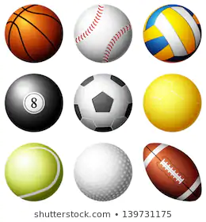

Image Maps

wikipedia says,
From Middle English bal, ball, balle, from Old English *beall, *bealla (“round object, ball”) or Old Norse bollr (“a ball”),
both from Proto-Germanic *balluz, *ballô (“ball”), from Proto-Indo-European *b?oln- (“bubble”),
from Proto-Indo-European *b?el- (“to blow, inflate, swell”). Cognate with Old Saxon ball, Dutch bal,
Old High German bal, ballo (German Ball (“ball”); Ballen (“bale”)). Related forms in Romance are borrowings
from Germanic. See also balloon, bale.